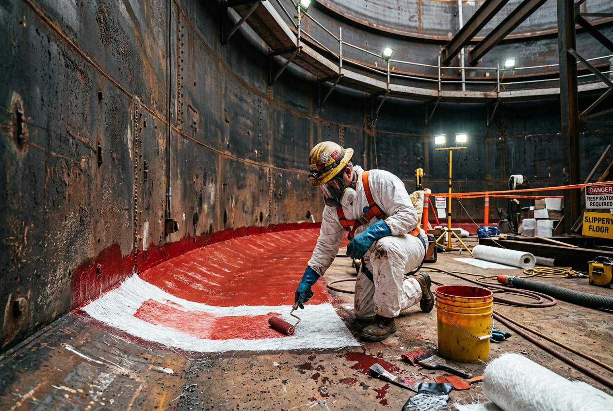

Laminación en Plástico Reforzado con Fibra de Vidrio para fondos de tanques de hidrocarburos.
Contamos con un grupo altamente capacitado y experimentado en obra de PRFV, basando nuestros trabajos en la aplicación de la norma SSPC-PA 6 / NACE No. 10: "Fiberglass-Reinforced Plastic (FRP) Linings Applied to Bottoms of Carbon Steel Aboveground Storage Tanks".
El Plástico Reforzado con Fibra de Vidrio (P.R.F.V.) es un material compuesto, constituido por una estructura resistente de fibra de vidrio y un material plástico que actúa como aglomerante de las mismas. El refuerzo de fibra de vidrio provee al compuesto: resistencia mecánica, estabilidad dimensional y resistencia al calor. La resina plástica aporta: resistencia química dieléctrica y comportamiento a la intemperie y agentes químicos.

Máxima resistencia química frente a hidrocarburos con alto contenido de azufre, solventes agresivos y ácidos calientes.
Ideal para almacenamiento de agua industrial, agua de purga, gasoil y aceites en condiciones operativas normales.
Capa superior lisa de resina pura que actúa como barrera de sellado final, eliminando cualquier fibra expuesta.
Relleno estructural previo de cavidades profundas generadas por la corrosión antes del tendido del laminado.
Arenado abrasivo seco de fondo y primera virola hasta lograr perfil de rugosidad óptimo y remoción total de contaminantes.
Aplicación de primer de adherencia sobre el metal limpio y masillado de costuras de soldaduras y picaduras profundas del acero.
Tendido de mats de fibra de vidrio saturados con la resina seleccionada, eliminando burbujas de aire mediante rodillos desaireadores.
Una vez curado el revestimiento, se realiza un ensayo dieléctrico por chispa de alta tensión para comprobar que no existan micro-poros o fallas de continuidad.